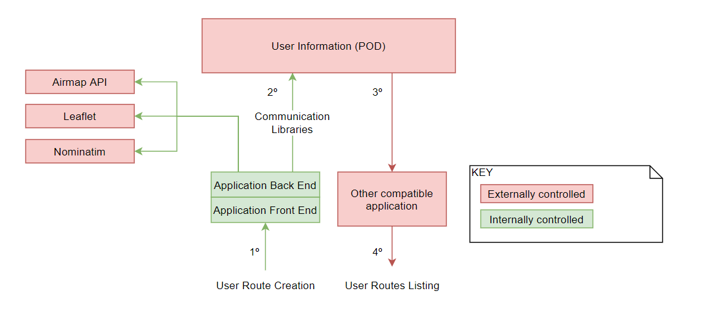

1. Introduction and Goals
1.1. Requirements Overview
1.2. Quality Goals
1.3. Stakeholders
2. Architecture Constraints
Architectural constraints are divided into three sections: * Technical * Organizational * Conventions
Each one of them is broken into two parts: Constraint and a brief explanation of its existence.
| Constraint | Explanation |
|---|---|
JavaScript |
The programming language used for the most part of this project. |
React |
JavaScript library for building user interfaces. Reference: "https://reactjs.org/" |
Git |
A distributed version control system. |
Node.js |
Node.js is a runtime system used mostly for making server side applications with JavaScript. Reference: "https://simple.wikipedia.org/wiki/Node.js" |
SOLID |
Solid (derived from "social linked data") is a proposed set of conventions and tools for building decentralized social applications based on Linked Data principles. Solid is modular and extensible and it relies as much as possible on existing W3C standards and protocols. Reference: "https://solid.mit.edu/" |
Arc42 |
Template for architecture communication and documentation. This technology will be the base of this project’s documentation. |
Travis |
As a continuous integration platform, Travis CI supports your development process by automatically building and testing code changes, providing immediate feedback on the success of the change. Reference: "https://docs.travis-ci.com/user/for-beginners/" |
CodeCov |
Codecov provides highly integrated tools to group, merge, archive, and compare coverage reports. Reference: "https://codecov.io/" |
Codacy |
Automatically identify issues through static code review analysis. Get notified on security issues, code coverage, code duplication, and code complexity in every commit and pull request, directly from your current workflow. Reference: "https://www.codacy.com/" |
| Constraint | Explanation |
|---|---|
Working in a team |
Must work on a team of 6 people. |
Release dates |
The project has to meet the deadlines of the course. |
Version control |
Github has to be used for taking keeping track of the progress done on the project. |
Meetings control |
Minutes of all the team meetings that occur should be recorded and uploaded to the project wiki. |
| Constraint | Explanation |
|---|---|
Clean code |
The project follows clean code conventions so it is easier to maintain. |
Language |
This project has to be internationalized. For that we use react-i18next. Reference: "https://github.com/i18next/react-i18next" |
3. System Scope and Context
The stakeholders of the application are described in the next lines and how the communicate.
3.1. Business Context
This is a high level view of the system. Showing the main idea behind the app.
- User
-
The user creates routes on our application or in other compatible aplications that use viadeSpec standard.
- User Friends
-
User SOLID friends can also create routes in their favourite application following the standard.
- Applications
-
Both applications will communicate between each other, showing and editing the routes or creating them. For an application to be considered compatible it must follow ViadeSpec.
3.2. Technical Context

Here we show deeply how the communication is done and which are the important parts of the system.
3.2.1. Internally Controlled:
- Application Front End
-
We use React to design it and Bootstrap to ease the design of the interface. It is our framework of choice for the frontend of the application, so this part will be developed in javascript and HTML. Its task is to build the HTMLs views which the user interacts with.
- Application Back End
-
- rdflib
-
It’s a library used to communicate with the Pods (where the information is stored); to fetch and update data whenever necessary.
- solid-file-client
-
A library used to store files in any format to the PODs.
- solid-auth-client
-
A library used to authenticate a user securely and have access to parts of their PODs.
- solid-acl-utils
-
Used to manage POD’s permissions.
- ldflex
-
It’s used to query data from the different PODs.
The application is based on the SOLID project for the re-decentralization of the web, therefore each user is the owner of its own data through the mentioned Pods.
3.2.2. Externally Controlled:
On the above graph we show an example on how would the communication be when creating a route and being shown in another compatible application. Information always goes through the POD, following the order marked by the numbers, and once there, compatible applications will manage to show the routes in the way they do.
Although not depicted by the example, it can also be possible for both applications to swap roles and for our application to correctly display the routes the other application has created.
4. Solution Strategy
4.1. Summary
This application is implemented using Javascript, React.js, SOLID specifications and many other dependencies gathered thanks to npm. Its architecture follows the MVC pattern.
Allows users to authenticate into the system with their SOLID account and manage their routes (stored inside their pod). These routes can be created by the user, already predefined in the system or shared by other users.
Pod decentralised data storage alongside a route shape standard provide our application with interoperability with other route management systems, like all the other Viade proyects.
4.2. Some solution approaches
| Quality goal | Scenario | Solution approach | Link to Details |
|---|---|---|---|
Standards |
Route data model |
Elaboration of a data model |
|
Perfect imperfection |
Application design |
The intent of fulfilling our goals while understanding that errors have their place |
|
Data ownership |
Information storage |
Personal SOLID pod storage |
5. Building Block View
5.1. Whitebox overall system
This application has a very simple top level design. This is introduced by System Scope and Context.
- Viade application
-
It’s the application we’re talking about.
- External APIs
-
We use some APIs available on the internet, to manage maps and points. They are detailed in the last point of this section.
- PODs
-
As we said is the service we use to store routes, groups and all the user’s information. Through them, we allow other compatible apps to share data with us.
- Contained blackboxes
| Name | Responsibility |
|---|---|
Viade application |
Main blackbox, contains every key component. Manages routes in every possible way allowed in our application. As well as with the user’s pod. Also manages connections with other dependencies that will be explained down below. |
Other applications |
Generation of route serialisation in supported formats to be processed by Viade applications. Blackbox decomposition out of the scope of this documentation. |
5.2. Whitebox: Our application - Viade
This whitebox contains several blackboxes that depend on a series of interfaces to external sources of information. These modules can be seen in the diagram image shown below.
This representation focuses on functionality. Hence some components wont match their corresponding file or might be represented by more than one file. Some other functionalities weren’t represented since they were considered as non-relevant.
- Contained blackboxes
| Name | Responsibility |
|---|---|
RouteCreation |
Contains the functionalities that can be used by the users to create new routes. Once created, provided a list of values with some requirements, the route is stored inside the user’s POD. |
Profile & group management |
Provides the users with the ability to inspect their profile and manage their groups of friends. |
RouteList |
Lists the set of routes stored inside the user’s POD. Gives the option to learn more about the route, such as its points, altitude of them or media related to them. |
PODService |
Helper module to stablish a connection with the user’s POD. Provides an interface with a series of operations commonly used to manage information such as routes. |
ElevationChart |
Wraps an interface component in charge of the display of the route points' altitudes. |
RouteModel |
This blackbox contains the whole model used to represent and manage routes inside Viade. This module is one of the keys of this application. |
RouteInfo |
This component (yet another interface one) displays information about the route in a fancy way. Some things like its name, description, author, points on a map, altitude of those points and a gallery of images. |
- Interfaces
| Interface | Description |
|---|---|
Solid-file-client |
This one allows the application to manage files when using the POD storage. More on this one here. |
Solid-auth-client |
This one is needed to obtain and manage user session details with regards to SOLID POD and account. More information about this API here. |
Solid-acl-utils |
Utilities used to manage POD’s permissions. More info here |
N3 |
A library used to parse turtle files. Required for some files of the POD as, for example, inbox notifications. More info here. |
Airmap elevation |
This API provides a result for the elevation of a couple of coordinates given latitude and longitude. More info here. |
Leaflet |
This API is needed to mainpulate the map components that React-Leaflet provides. More on that here. |
Nominatim |
It’s a free search engine to allow looking for concrete places and get their coordinates. More info here |
6. Runtime View
6.1. Route Creation
The user creates a route using the map in the UI. Each time he creates a new point a temporal object is created which stores name and description. Moreover, at creation time or when it’s position is updated, a real point is created (without name and description) in order to ask the API for its altitude. This process is asynchronous and once we have the response the elevation chart in the view is updated. Finally, when all the points are created, the route is decorated with name and description for all the points. Then, it’s uploaded to the POD.
6.2. Route Listing
The process for listing routes is the following.
-
The Route Manager gets cleaned in order to then load the new routes.
-
A POD Storage Handler is created with the current user to gain access to the POD.
-
The method getRoutes() starts an asynchronous route loading.
-
For each of the routes retrieved we create a new one, and populate it with the data returned.
-
The route is then added to the manager and printed in the screen for the user.
7. Deployment View
Viade is a client application, so we don’t have multiple servers or a complex topology to explain here. Therefore, this will be very simple.
7.1. Infrastructure Level 1
| Part | Explanation |
|---|---|
Internet Available APIs |
All the APIs we use are free, and online accesible. |
Viade App |
Our app will be deployed in GitHub Pages. |
Solid PODs |
They are allocated in Inrupt or Solid Community servers and maintained by them. |
- Motivation
-
-
The use of Internet Available APIs is an advantage. Thanks to this we don’t have to store maps in our central server (which we don’t have) nor in the client.
-
Using GitHub pages avoids us to configure and mantain a server. All system administration is provided by GitHub.
-
The use of Solid PODs is a constraint.
-
- Mapping of Building Blocks to Infrastructure
-
The mapping seems pretty clear. The "Viade Application" blackbox is the web displayed. The interfaces shown are the ones we refer here and also the PODs.
7.2. Test Environment
Tests of the application are a relevant aspect of Viade.
| Test Framework | Explanation |
|---|---|
Travis |
Thanks to Travis we can assure the continuous integration of Viade whenever a new feature is added. Travis takes care of running all the Jest tests as well as running code coverage revisions. Finally, if everything is correct, the application is built and updated. |
Jest-Dom Testing Library |
Tests whether the intended React components load correctly in the application. |
Code Coverage |
Checks for the amount of code that was run when performing the tests, useful to know precisely how deep the tests performed. |
Codacy |
Codacy checks for code quality. With it, we can easily create good quality code that follows the standards. |
Cucumber |
Helps with the simulation of the user’s experience when using the app. It acts as if a user was using the application, and doing so, tests it for errors that may be present. |
POD in Docker |
As connection with the remote POD across the internet is not reliable, Docker can be configured to act as a server where a POD is stored. Doing so, the connection is ensured and all POD access tests can be performed risk-free. |
- Motivation
-
Testing increases code quality and assures Viade’s viability and security.
- Quality and/or Performance Features
-
Repairing errors and mistakes increases every aspect of quality. All the testing will also ensure we understand where are the most used parts of the application and what should be optimised.
8. Cross-cutting Concepts
8.1. Package Structure
The package structure followed during the development of the proyect is this one. Inside src folder we can find the following.
- Assets
-
Contains the images to be displayed, as logos or the main window photos.
- Components
-
Reusable components used in many parts of the application. For example, the maps, elevation chart…
- CSS
-
Some parts need special CSS rules. The files that defined them are here.
- Docs
-
The folder where this documentation is stored.
- Model
-
Contains the classes that define the data model (MyRoute) and also the classes that manage them.
- Pages
-
Has inside those views that are directly shown to the user. It’s the final arrangement of the individual React components.
- Tests
-
Contains all the tests of the application.
8.2. Route Management Model
Class diagram containing the classes that manage routes
8.3. Navigation Map
8.4. Viade Specification
With the creation of this specification we can follow a standart, making sure we can communicate with other applications and therefore creating a network of route management systems available to the users.
9. Design Decisions
9.1. Not Use React Native
We decided to postpone the use of React Native.
-
Allows creating apps for Android and iOS with the same code than the web application.
-
Dynamic HTML pages can be easily created.
-
Will take time to learn the language.
-
Less pre-created components available.
-
Not much advantage in using it, as the main functions can be emulated using a web browser for mobile phones.
9.2. JSON-LD Format for Routes
-
The use of a standard makes it easy for the application to communicate with other services.
-
We follow Viade Specification, therefore making sure we can exchange information with other compatible applications.
-
JSON notation which is already known by us.
-
PODs dont have yet a way to view the files in this format.
9.3. Leaflet
We chose Leaflet as our map provider.
-
It provides the advantage that is OpenSource and that it doesn’t need any API Key. This was the main reason why we discard Google Maps.
-
Also with React-Leaflet library, we don’t have to program the basic components such as Map, Marker or Polyline. They came already implemented.
-
None of us has previously worked with this tool, so it’s another thing to learn.
9.4. Chart.js
We chose chart_js as our plotting tool.
-
Has react suport to ease the task of developing the charts
-
It’s free.
-
It’s well documented.
-
Needs a lot of code to configure the charts.
9.5. Storing altitude for points in the POD
-
Reduces latency when displaying points as it only checks the altitude of each point once.
-
ViadeSpec points seem to follow this approach.
-
More space occupied
9.6. AirMap Elevation API
-
It’s free
-
Doesn’t need API Key
-
Easy to use (just a single GET request)
-
For some points, such as seas, lakes or oceans may not give a response.
9.7. Sharing of routes
Our approach saves all files in a private directory (that is, viade/ inside the POD). Then, when sharing, giving the user’s friends rights to view the files and sending a notification to each user of the newly shared route to them.
The other approach would have been saving everything on public/ directory.
-
Privacy and sharing for particular users is allowed.
-
A user can have his own private routes.
-
Harder to implement.
-
If not careful may result in loss of rights on files.
-
A need of learning a library or method to edit the permissions of the POD.
-
Creating a notification system to inform to the receiver of the share.
10. Quality Requirements
10.1. Quality Tree
10.2. Quality Scenarios
11. Risks and Technical Debts
12. Glossary
| Term | Definition | More Information |
|---|---|---|
Solid |
Solid (Social Linked Data) a web decentralization project led by Tim Berners-Lee |
|
Pods |
Personal Online Data Stores, used to deposit the person’s data |
|
GPX |
XML schema designed as a common GPS data format for software applications |
|
MVC |
Software design pattern commonly used for developing user interfaces which divides the related program logic into three interconnected elements |
|
Viade Specification |
An specification to follow in order to manage the way in which the routes will be uploaded to the user’s PODs |
About arc42
arc42, the Template for documentation of software and system architecture.
By Dr. Gernot Starke, Dr. Peter Hruschka and contributors.
Template Revision: 7.0 EN (based on asciidoc), January 2017
© We acknowledge that this document uses material from the arc 42 architecture template, http://www.arc42.de. Created by Dr. Peter Hruschka & Dr. Gernot Starke.